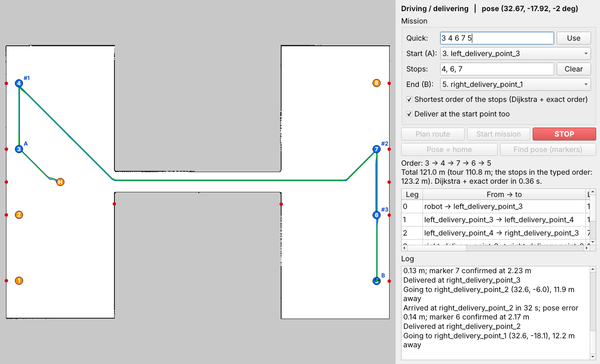
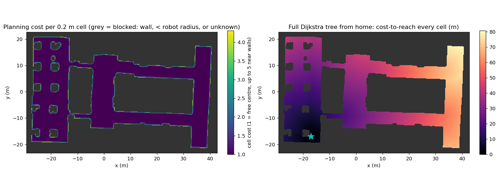
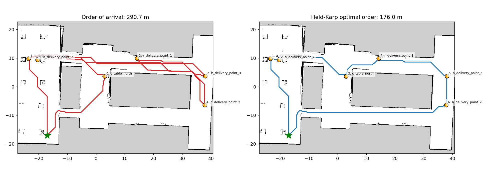
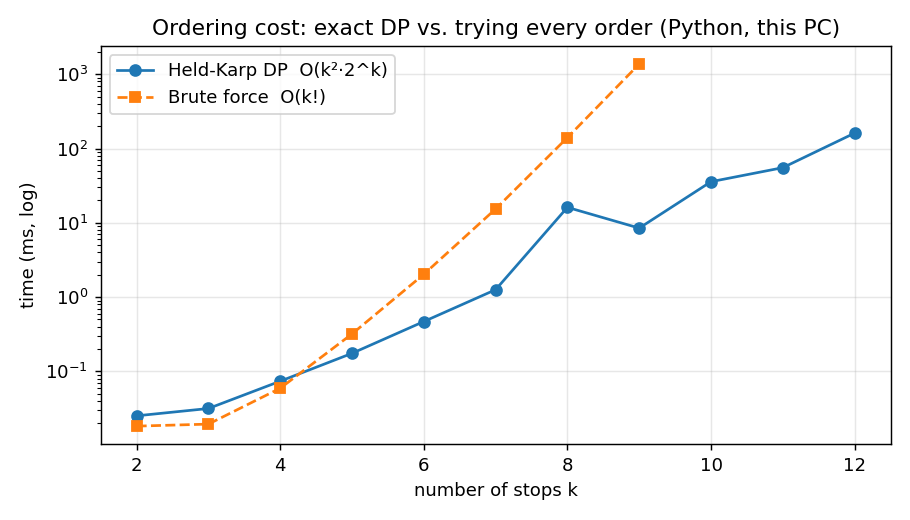

/robot/plan shows the shortest tour and its saving before the robot starts.A delivery mission has two layers. Where to drive between two points is a shortest-path problem on the map
grid, solved with Dijkstra's algorithm. In which order to visit several delivery points is a travelling-salesman
problem on top of it, solved exactly with Held-Karp dynamic programming on the Dijkstra distance matrix. Both run in
delivery_navigator.py and behind the web app's /robot/plan and /robot/mission.

g[start] = 0, all other g = ∞; push (0, start) on a binary heap
while heap not empty:
pop cell i with the smallest g; skip if already closed; close it
for each of the 8 neighbours j (not blocked, not closed):
ng = g[i] + step(i,j) · ½(cost[i] + cost[j])
if ng < g[j]: g[j] = ng; parent[j] = i; push (ng, j)
path = follow parent[] back from the goal
PlanningGrid._search uses Python's heapq with lazy deletion, so the run time is
O(E log V) on the grid. With a goal and the octile heuristic the same function becomes A*; the navigator uses the pure
Dijkstra form because one run from a point returns the whole tree (dijkstra_tree), from which the cost and path to
every stop are read without searching again.
| Same query: home → b_delivery_point_3 | Time | Path length |
|---|---|---|
| Dijkstra (no heuristic, stops at goal) | 115 ms | 71.5 m |
| A* (octile heuristic) | 56 ms | 71.5 m |
Both return the identical path; A* explores fewer cells for one goal, but for tours the full Dijkstra tree is cheaper than one A* per pair of points.
For a mission with start A, stops x₁…xk and end B, one Dijkstra tree from A and from every stop fills the (k+2)×(k+2) matrix of real driving costs. Held-Karp then finds the cheapest open path A → all stops → B exactly:
best[{x_i}, i] = D[A, x_i]
best[S ∪ {j}, j] = min over i in S of best[S, i] + D[x_i, x_j]
answer = min over i of best[all, i] + D[x_i, B] (back-pointers give the order)
This is O(k²·2k) instead of O(k!) for trying every order. The navigator uses it up to 12 stops and switches to nearest-neighbour + 2-opt above that.
Six delivery points of campus_full_map7, start and end at home, listed in "order of arrival":
a_delivery_point_2, b_delivery_point_3, r_delivery_point_1, b_delivery_point_2, a_delivery_point_7, c_table_north. The planner and ordering code were imported unchanged from the
package and run offline on the saved map (script reports/src/scripts/dij.py).
| Method | Tour cost | vs. optimum |
|---|---|---|
| Order of arrival (no optimisation) | 290.7 | +65 % |
| Nearest neighbour | 176.5 | +0.3 % |
| Nearest neighbour + 2-opt | 176.0 | +0.0 % |
| Held-Karp (used) | 176.0 | optimal |
| Brute force over all 720 orders (check) | 176.0 | same as Held-Karp |
Optimal order: home → a_delivery_point_2 → a_delivery_point_7 → c_table_north → r_delivery_point_1 → b_delivery_point_3 → b_delivery_point_2 → home. Costs are in cost-weighted metres, i.e. path length inflated slightly near walls, so they are a little above the geometric length.

| From home to | Dijkstra cost | Straight line (m) | Ratio |
|---|---|---|---|
a_delivery_point_2 | 29.5 | 27.6 | 1.07 |
b_delivery_point_3 | 71.9 | 58.8 | 1.22 |
r_delivery_point_1 | 50.2 | 41.2 | 1.22 |
b_delivery_point_2 | 62.9 | 55.8 | 1.13 |
a_delivery_point_7 | 27.8 | 26.6 | 1.05 |
c_table_north | 34.8 | 28.7 | 1.21 |
Walls make the real distance 5–25 % longer than the straight line, and not by the same factor for every point, so ordering by straight-line distance can choose the wrong tour.


/robot/plan shows the shortest tour and its saving before the robot starts.